What it's for
You sing at different venues, and you don't want to sing the same songs over and over at any one of them. Mic Jaunt remembers what you sang where and when, so you can see what a room has already heard from you and build a fresh set for each night.
Songs
Your songs are everything you can sing, or want to try. Each one can carry its genre and year, the key change you use on the karaoke machine, your own tags, a status (Go-to, Want to try or Retired), a rating from 1 to 5 for how well you sing it, and notes such as “skip the bridge”. Wherever a song shows, it says how many times you sang it at the venue you're at and when you last did.
Lists
A list is a group of songs in the order you choose: for a venue, for a theme such as “Slow ones”, or for a night. A list can be labeled for one venue or for any venue, but the label is only a label: any list can be used anywhere. A song can be on as many lists as you like.
Tonight's set
At each venue one list is tonight's set: the one you sing from. Its first song is Up next, and Sang it works on it. You choose which list it is. Your other lists are there to plan with and to pull songs from.
Next time
When a song on tonight's set has to wait (someone else sang it, or the night ran out), Park moves it to the venue's Next time list. That is an ordinary list labeled for the venue, made the first time you park a song there, and you can rename it. On your next visit, show it from the Set menu and pull its songs into tonight's set with +.
Getting started
A few steps, once. After that, a night out is mostly the Tonight screen.
- Put it on your Home Screen. On your iPhone, open micjaunt.app in Safari, tap Share, then Add to Home Screen. Open it from there from now on: it opens full screen and works with no signal. Do this before you add songs, because the Home Screen app keeps its own data, separate from Safari's.
- Load the KaraFun catalog (optional). If your venues use KaraFun, Mic Jaunt can search their whole song list and mark which of your songs they have. The app never downloads it by itself, so you fetch the file once:
- In Safari, open karafun.com/karaoke-song-list.html (in the app, Settings, KaraFun catalog, Get the catalog from KaraFun opens the same page).
- Download the song list. It is a CSV file of about 7 MB. When Safari asks, choose Save to Files.
- In Mic Jaunt, open Settings (the gear), go to KaraFun catalog, tap Load catalog file and choose the file. The card shows its progress, then when it was loaded and how many songs it holds.
- Delete the downloaded file from Files. The catalog is now inside the app, and the file only takes up room.
- KaraFun keeps adding songs: load a fresh file every six months or so. Loading again replaces the old catalog.
- Add your songs. Any of these:
- On Songs, tap Add a song at the end of the list. A title and an artist are enough. If Online suggestions is on in Settings, MusicBrainz, a free music database, is asked for songs matching what you type and fills in the title, artist, year and genre. This is the app's only contact with an outside organization, and it is used only while you add a song by hand; leave it off for a completely offline app.
- With the catalog loaded, switch Songs to KaraFun, find a song and tap Add to my songs.
- If your songs are in a spreadsheet, save it as CSV and use Import songs from CSV in Settings.
- Add your venue. On Tonight, tap the venue name at the top (it says Overall at first) and choose Add a venue…. Type the name, tap Add venue, go back, and pick the venue in the same menu. Once you have a venue the menu says Manage venues… instead. The first time you pick a venue, Mic Jaunt opens a set for tonight: a list labeled for the venue if you have one, else a list for any venue, else a new empty list named after the venue.
- Build tonight's set. Type part of a title in the field at the bottom of Tonight and tap + beside the song you want. Or tap + beside any song on Songs. For a fresh list, choose New list for tonight… in the Set menu: it is named for today, like “Fri 14 Nov”, and becomes tonight's set.
- Sing. When you come off stage, tap Sang it. The song is logged at the venue with today's date, it leaves the set, and the next song shows full screen for the KJ.
- Back up. Once you have completed these first steps, and as your personal catalog grows: Settings, Backup, Share backup, then Save to Files.
Tonight
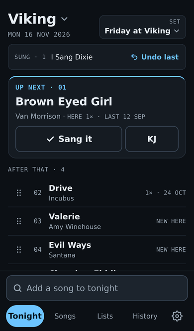
Tonight is where the app opens. It is about one venue and one night.
The venue and the Set menu
The venue's name at the top is a menu: every venue you've added, Overall, and Manage venues…. Mic Jaunt remembers your choice. Every song shows how many times you sang it here and when you last did (“2× · 17 Oct”), or New here.
Overall means no venue. You can build and order a list there, but Sang it, Park and the Sung strip are off, and Up next offers only KJ.
Under the venue is today's date. At the right, the Set menu shows tonight's set to begin with. It lists every list, grouped as those for this venue, those for any venue and those for other venues, and ends with New list for tonight…, which starts an empty list named for today and makes it tonight's set.
Up next
The first song of tonight's set sits in the Up next card, with its key if you set one, the artist, and how often you sang it here.
- KJ shows the song full screen to hand across: the title and artist as large as fit, and the key as a big number with its meaning in words, such as “−2, two semitones down”. Turn the phone sideways and only the title, artist and key show. Done, or the back gesture, returns.
- Sang it logs the performance at this venue with today's date, takes the song off the set and shows the next song full screen for the KJ, all in one tap, so you keep your place in the rotation. The top of that screen says what was logged, with Undo. After the last song, Tonight says that was the last one.
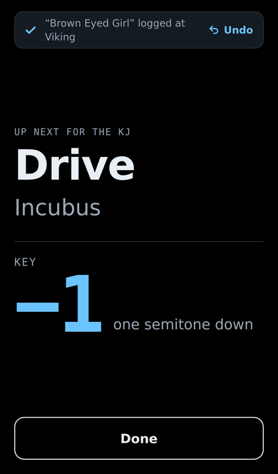
What you sang tonight
Once you've sung, the Sung strip under the header lists today's songs here. Undo last deletes the last performance and puts the song back at the top of the set. Tap the strip to see every performance at this venue, by date, newest first, with Undo beside today's.
After that
The rest of the set follows, numbered 02, 03 and on.
- Tap a title to open the song's page. Its Back returns here.
- Drag the handle (the six dots at the left) to move a song. Held near the top or bottom edge of the screen, the list scrolls. Up next stays where it is.
- Swipe a row left to show Park and Remove. Park moves the song to this venue's Next time list. Remove takes it off tonight's set without asking; + puts it back. One row opens at a time, and a tap on it closes it.
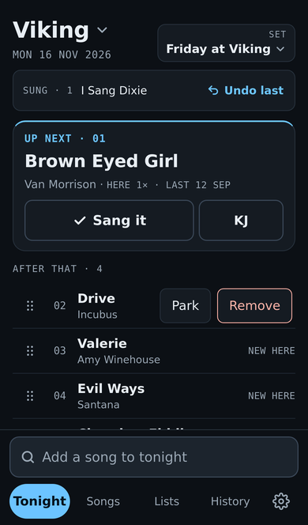
Showing another list
Choosing another list in the Set menu shows it without changing tonight's set. A line at the top says which list is showing and which is tonight's set, with Use for tonight to make the one showing tonight's set.
Another list has no Up next. Every song is a numbered row with the handle, and a + that pulls the song into tonight's set (it turns to ✓; tap again to take it out). Swipe a row left for Remove, which takes it off the list showing. This is how to use Next time: show it, and + the songs you want tonight.
The list you show stays while the app is open, on every screen, and Songs adds to it too. It goes back to tonight's set when you reopen the app or change venue.
The field at the bottom
Type part of a title or artist. Up to eight of your songs that match show above the field, titles that start with what you typed first, each with + to add it to the list showing (✓ takes it off). The keyboard stays up, so you can add several.
When fewer than three of your songs match and the KaraFun catalog is loaded, “Search the KaraFun catalog for …” opens Songs on the catalog with your words. When none match, “Add … as a new song” opens the add form with the title filled in. Clear the field to see the set again.
Songs
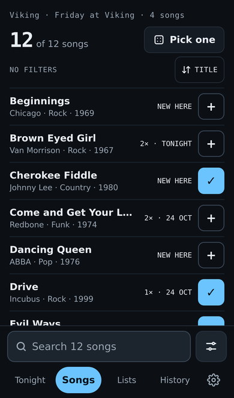
Songs is your whole library. The line at the top says which venue and list + adds to, such as “Viking · Friday at Viking · 4 songs”.
Search
Type in the field at the bottom to search titles and artists as you type. A space after a word makes it a whole word: “I ” (with the space) finds “I Sang Dixie”, not every title with an i in it. The same works in every search field in the app.
The list
Each row shows the title, the artist, genre and year, how often and when you last sang it at the venue (or New here), and a KaraFun mark if KaraFun has it. Tap a row for the song's page. + adds the song to tonight's set, or to the list you're working on; ✓ takes it off. A long library shows 200 songs at a time, with a button at the end to show more.
The count line says how many songs the search and filters leave, such as “38 of 412 songs”. Pick one opens one of them at random, for when you can't decide.
Filters and sort
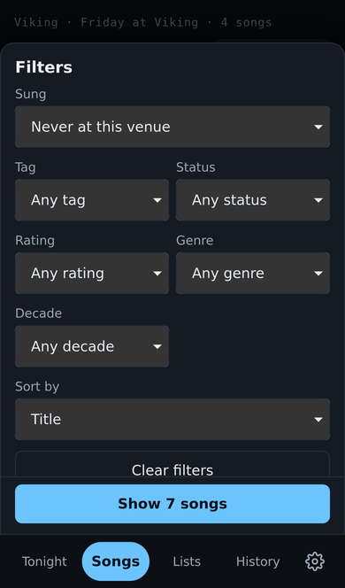
The button beside the field opens the Filters sheet; its badge counts the filters that are on. The list changes behind the sheet as you choose, and the button at the bottom of the sheet says how many songs it shows.
- Sung: Any, Never at this venue, or Not since a date you pick (songs never sung here, or last sung before that date).
- Tag, Status (including Not set), Rating (at least), Genre and Decade.
- KaraFun: songs KaraFun has, or doesn't. It shows once you have a catalog.
- Sort by: Title, Artist, Rating (best first), Last sung here (most recent first, or longest ago first, which puts never-sung songs first), Date added, Genre or Decade. The sort also shows as a button above the list, which opens the sheet.
Each filter that's on shows as a token above the list; its × turns it off. Clear all (or Clear filters in the sheet) turns them all off and puts the sort back to Title. Your filters and sort stay when you go to another screen and after the app closes; the search stays while the app is open.
The KaraFun catalog
Once a catalog is loaded, a My songs | KaraFun switch sits at the top. KaraFun searches the catalog instead of your songs; nothing lists until you type two letters or choose a filter. Its filters are Genre, Decade, Duet, Explicit and Language, and it can sort by when songs were added to KaraFun.
Each catalog song shows the artist, year and styles, Duet and Explicit marks, and Add to my songs, or In my songs if you have it. Add to my songs copies the title, artist, year and genre. + adds it to your songs and to the set in one tap. A search of your own songs that finds nothing offers to search the catalog.
Adding a song
Add a song waits at the end of the list, and a search that finds nothing offers to add what you typed. The form asks for a title and an artist; genre, year and status are optional, and a new song has no status until you choose one.
If you already have that title and artist, the form says so, with Open it to go to that song; its button becomes Add anyway.
While you're online, titles and artists are suggested from MusicBrainz (if enabled), a free music database, once you've typed three letters. Tap one to fill in the title, the artist, the year of its first release and the artist's main genre; the artist's other genres show as buttons to pick from. Anything you typed yourself is kept. Settings can turn the suggestions off.
A song's page
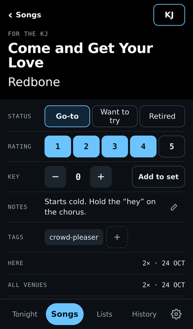
Tap a song anywhere to open its page. The title, artist and key are large, so the page itself can be shown to the KJ; KJ at the top shows the song full screen.
These save as soon as you tap:
- Status: Go-to, Want to try or Retired. Tap the chosen one again to clear it.
- Rating: 1 to 5. Tap the chosen one again to clear it.
- Key: − and + move the key change a semitone at a time, as you set it on the machine.
- Add to set puts the song on tonight's set; it then reads On set with its place, such as “On set · 03”. Tap it again to take the song off.
Below are your notes and tags (the pencil and + open the edit form), how often and when you sang it here and at all venues, its genre and year, and whether KaraFun has it.
Listen searches YouTube for the song in a new tab, to practice. Edit changes anything: title, artist, genre, year, key, rating, status, tags and notes. Delete removes the song from your catalog after asking, with its performances and its place on every list. Back returns to where you opened it: Songs, Tonight or a list.
Lists
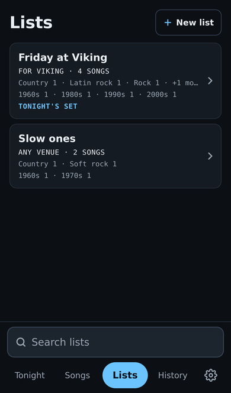
Each list is a card with its name, its label (For Viking, or Any venue), how many songs it has, a line of its genres and a line of its decades, and how many of its songs are in tonight's set (or Tonight's set, if it is). The field at the bottom finds a list by name.
New list asks for a name and, if you like, a venue to label it with. No two lists can have the same name.
Lists remembers where you were: come back within five minutes and the list you had open opens again.
A list's screen
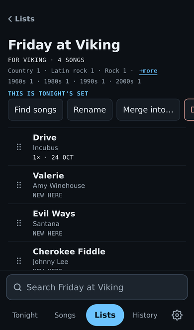
Tap a card to open the list. At the top are ‹ Lists and, unless it already is, Make this tonight's set, which makes it tonight's set at the venue chosen on Tonight.
Under the name come the label and song count, then the mix: a line of genres and a line of decades, showing the biggest groups. Each line is a single line that cuts off when there is more; +more at its end opens the full counts in place (every genre, most first, and every decade, oldest first); fewer folds them away. A line then says how many of its songs are in tonight's set, or This is tonight's set.
- Find songs opens Songs with this list as the one + adds to, without making it tonight's set. You can build next week's list while you wait to sing.
- Rename (the name and the venue label), Merge into… and Delete sit on the same row; on a phone, swipe the row left to reach the ones past the edge. Merge into… moves every song the other list doesn't have to its end and leaves this list empty; it asks first, with the counts. Delete asks first; your songs stay in your library.
Each song shows its artist and, on a list for a venue, how often and when you sang it there (or New here). + puts it on tonight's set, and ✓ means it's there (except on tonight's set itself). Tap a song for its page, whose Back returns to the list. Swipe a song left for Remove, which takes it off this list without asking.
Drag the handle at the left to reorder. Held near the top or bottom edge of the screen, a drag scrolls the list, so a long move is one drag. The field at the bottom finds songs in the list; the handles hide while it does.
Suggest songs
Under the songs, Suggest songs picks songs you have never sung at the list's venue (or anywhere, for an any-venue list), leaving out Retired songs and songs already on the list. Choose how many, from 1 to 50.
- Match this list, the choice once a list has songs, picks in proportion to the list's own genres, and within each genre to its decades. It never goes outside the list's genres, so it may find fewer than you asked for, and says so.
- Mix it up spreads the picks across all your genres and decades.
You see a preview first, each song with its genre and year and × to drop it. Add these puts the rest at the end of the list, and Undo beside “Added N songs” takes them off again until the list changes some other way. Cancel adds nothing.
History
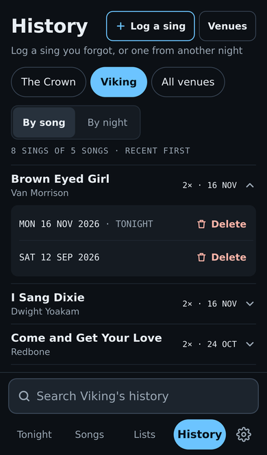
History shows what you sang. The chips at the top choose a venue, starting at Tonight's, or All venues.
- By song lists each song with how many times and when you last sang it, such as “2× · 16 Nov”, most recent first. Tap a song to see each sing.
- By night lists the same performance by date, newest first.
- Every performance has Delete, which asks first: use it to undo a mis-tap from an earlier night.
- The field at the bottom searches the history by title or artist.
Log a sing records a performance you forgot, or one from another night: choose the venue, type to find the song, and set the date, which starts at today.
Venues adds, renames and deletes venues (Tonight's Manage venues… opens the same list). A venue you've sung at can't be deleted. Lists labeled for a deleted venue become Any venue.
Settings
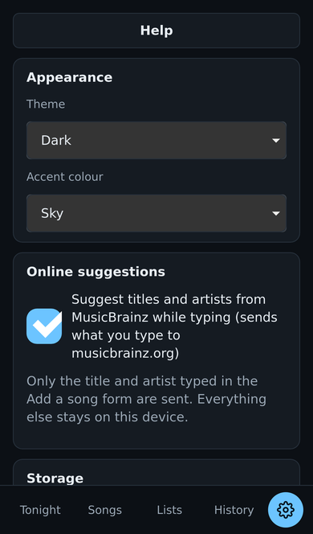
The gear at the right of the bar opens Settings.
Help
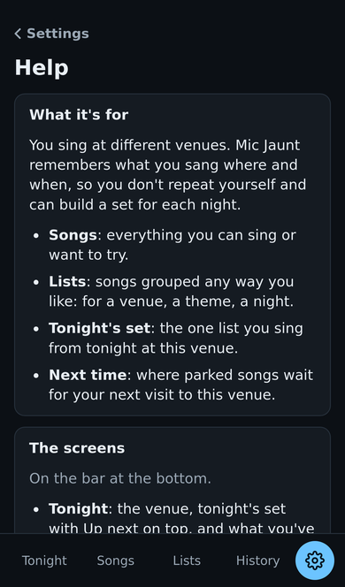
The button at the top of Settings opens a short version of this guide inside the app: what it's for, the screens, a night step by step, the first steps and a few tips. Its Full guide link opens this page.
Appearance
Theme: Dark (the default, for a dim bar), Light, or Match the phone. Accent color: Sky, Green, Amber, Lime or Pink.
Online suggestions
The MusicBrainz suggestions in Add a song. Only the title and artist you type there are sent, and only while this is on. Everything else stays on the phone.
Storage
Says whether the browser has agreed to keep the app's data for good, with Ask for persistent storage. An app on the Home Screen keeps its data anyway.
Import and export songs
Import songs from CSV reads a spreadsheet saved as CSV, with a header row naming the columns:
- Title and Artist are needed.
- Genre, Year, Key and Tags are read if present; separate tags with ; or ,.
- Venue logs a performance at that venue for each row, adding the venue if it's new. Date dates it (2024-05-01, 2024-05, 2024 or 5/1/2024); a blank date means the day of the import.
Other columns are ignored. Songs you already have, and rows without a title or artist, are skipped, and the result says how many.
Download songs as CSV saves every song with its title, artist, genre, year, key, tags, status, rating and notes, for a spreadsheet. It imports back without duplicates, though status, rating and notes are not read back in. Venues, performances and lists are only in the backup.
Backup
A backup is one file holding your songs, venues, performance history and lists. It is the only copy of your data that isn't on the phone, so save one after a night out.
- Share backup (on a phone) opens the share sheet: choose Save to Files, AirDrop or Mail. It counts as a backup only once the share goes through. On an iPhone this is the reliable way: Download backup from the Home Screen app may do nothing.
- Download backup saves the file to your downloads, on a computer or wherever sharing isn't offered.
- Check a backup file reads a backup and says what it holds and how that compares with the phone, without changing anything.
- Restore from backup replaces everything on the phone with the backup's contents, after asking.
If you've never backed up, or your last backup is more than 30 days old, a reminder shows above the bar with Back up now and Later, which hides it for a week.
Safari and the Home Screen keep separate data. On an iPhone, songs you added in Safari don't appear in the app on the Home Screen. In Safari, a banner offers Move my data, which takes you to Backup: Share backup, then Save to Files. Then open the Home Screen app: with no songs yet, its Songs screen offers Restore a backup, which takes you to Restore from backup.
KaraFun catalog
Get the catalog from KaraFun opens KaraFun's song list page, where you download the file (see Getting started). Load catalog file reads it; the line above the button says when the catalog was loaded and how many songs it holds. A file that isn't KaraFun's song list is refused before anything changes. Loading a newer file replaces the catalog, and every load marks which of your songs KaraFun has.
Remove catalog deletes it from the phone; your songs keep their KaraFun marks. The catalog isn't part of the backup: on a new phone, load the file again.
Version
The bottom of Settings shows which version of the app you have.
Tips and troubleshooting
- The keyboard covers the list. On Tonight, the matches show just above the field, in the room the keyboard leaves. On Songs, the top of the screen folds away while you type, so the first matches show; the keyboard's Search key puts it away, and the list is already up to date.
- The × in the field clears it. If the keyboard was up it stays up for the next search; if it was down, it stays down.
- The back gesture, or the Back at the top of a screen, returns to the screen before. It never leaves the app from a song, a list or Settings.
- The backup reminder shows once you have songs and no backup, or the last one is over 30 days old. Back up now opens Backup; Later hides it for a week.
- A new version is ready. When an update arrives, a banner offers Reload and Later. Nothing changes in the middle of a night: Reload when it suits you, or the app picks it up next time it opens.
- No signal. Once on the Home Screen, the app works fully offline. Only the MusicBrainz suggestions, Listen, the KaraFun page and this guide need a connection.
- Your data is yours. Everything stays on the phone: no account, no sign-in, nobody else sees it. The flip side is that only a backup can bring it back if the phone is lost or replaced.
- Printing. On a computer, the browser's print menu prints your songs, a list or a venue's history cleanly.